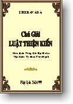

BuddhaSasana
Home Page
This document is written in Vietnamese, with Unicode
Times font
|  |
Theravàda Chú
Giải Luật Thiện Kiến
|
-ooOoo- "Vinayo Sàsana Mùlam" -oOo- Lời Người DịchChú giải luật Thiện-kiến, nguyên bản Thiện kiến tỳ bà sa (Paly: Samantapàsàdikà) 18 cuốn, do Tăng-già-bạt-đà-la (Sanghabhadra - Chúng-Hiền, Ðệ tử Ngài Buddhaghosa) dịch từ thời Nam-Tề, vào khoảng Vĩnh minh năm thứ 06 Dương lịch năm 488 tại chùa Trúc lâm, Quảng châu, Trung quốc, giải thích Luật Theravàda theo truyền thừa của Thượng tọa bộ Tích-lan. Bộ chú giải này là một trong năm bộ luận giải thích về luật trong Luật bộ thuộc Hán dịch Bắc truyền Ðại tạng kinh lưu hành tại Trung quốc và được đưa vào Ðại chính tân tu Ðại tạng kinh N.1462, tập 24 do Nhật bản biên tập. Từ Quyển 1 đến Quyển 5 ghi lại một phần sinh hoạt của Tăng đoàn sau khi Phật Niết bàn, các cuộc kiết tập kinh điển và sự truyền trì luật tạng, chư tổ truyền thừa, sinh hoạt tăng đoàn... đến sự việc Trưởng lão Mahinda con trai vua A-dục truyền Phật giáo sang Tích lan. Từ Quyển 5 trở về sau giải thích giới bản tỳ kheo và các kiền độ. Ðối chiếu bộ luật này với Nam truyền Ðại tạng kinh thì phần Tựa nằm ở phần Thiện-kiến luật chú tự tập 70, phần sử vua A-dục và chư tổ truyền thừa ở phần Ðại vương thống sử tập 65, từ Quyển 5 trở về sau nằm phân tán trong Luật tạng từ tập 1 đến 5. Bộ luận này là một bản sao dịch từ bản chú giải Luật tạng Nam truyền của Luận sư Phật-Minh Buddhaghosa soạn thuật vào đầu thế kỷ thứ V. Trong Bộ luận này có nói đến sự việc không chấp nhận các học giới liên quan đến tháp Phật trong phần chúng học pháp của luật Tứ phần. Thứ tự và nội dung giải thích từng học giới trong bộ này theo thứ tự luật tạng Nam truyền và quan điểm của Thượng tọa bộ Tích lan mà tài liệu trích dẫn là Luật tạng Theravàda, Thanh tịnh đạo luận Visuddhimagga của Ngài Phật Minh và những mẫu chuyện về trì luật tại Tích-lan. Nguyên bản, các giới không ghi rõ thứ tự, chúng tôi cho thêm thứ tự theo chú thích của tạng Ðại chính và giới bản của Luật tạng Theravàda. Trong phần giải thích, có những câu không nêu rõ chánh văn Luật mà chỉ giải thích, chúng tôi dịch theo ý những đoạn tương đương trong Luật tạng Nam truyền. Với những câu mà nguyên bản trích dẫn Thanh tịnh đạo luận nhưng tối nghĩa, tôi dịch theo những câu tương đương trong bản Việt dịch Thanh tịnh đạo của Ny sư Trí Hải. Phần giải thích từng học giới và các Kiền độ, gặp những chổ khó hiểu, chúng tôi dựa theo phần giải thích trong Luật xuất gia của Ngài Hộ Tông, Tứ thanh tịnh giới của Ngài Bửu Chơn và Tứ phần hợp chú, Yết ma yết chỉ của Hòa thượng Trí Thủ để dịch. Ngoài ra, gặp những chổ ngoài khả năng, không tìm được tài liệu, chúng tôi có tham khảo ý kiến nơi Thầy Viên-Minh và Ðại đức Hộ-Pháp ở Bửu long. Bản Hán dịch này không đầy đủ như nguyên bản chú giải bằng Pàly của Ngài Buddhaghosa, có một số học giới bị lược đi, phần giải thích cũng chỉ nêu ra những vấn đề cần thiết. Ngay cả trong phần giải thích này, nếu không đối chiếu với Luật tạng Nam truyền và tham khảo các bản chú thích khác về luật thì cũng khó nhận định được các vấn đề mà tác giả muốn nói. Dịch bộ luật này, chúng tôi hy vọng giới thiệu đến độc giả một tác phẩm của Phật giáo Nam truyền nằm trong hệ Hán dịch Bắc truyền Ðại tạng kinh mà trước đây đã được các vị luật sư theo hệ Bắc truyền ở Ðông Nam Á thường trích dẫn trong các bản chú thích về luật trong Luật bộ Hán dịch. Ðồng thời, chúng tôi cũng muốn đóng góp một phần tài liệu về luật Theravàda cho quý vị Tăng ny trong các hệ phái ở Việt nam có lưu tâm nguyên cứu về Luật. Ngoài ra, bản dịch này cũng để đáp ứng một phần tâm nguyện dịch Tạng luật ra Việt ngữ của Thầy Tịnh Hạnh, Ðài Loan. Những thuật ngữ, danh từ, những vấn đề mà bản Hán văn phiên âm hay giải thích theo cách Hán dịch, chúng tôi ghi Pàly vào để người đọc dễ nhận định. Tuy nhiên, có những đoạn, chúng tôi ghi cả nguyên văn Pàly vào để các vị đọc giả chỉ giúp chúng tôi rõ ý nghĩa vấn đề nếu phát hiện những chổ sai nhầm hay không đúng với truyền thống Luật của Theravàda do người dịch hay từ bản Hán dịch thì chúng tôi sẽ sửa lại và chú thích rõ. Sau khi dịch xong, tôi được Luật sư Thích Ðỗng Minh chứng nghĩa cho từng cuốn. Bản dịch này, chúng tôi sử dụng những thuật ngữ đang dùng trong các bộ luật của Nam tông và Bắc tông bằng Việt ngữ đang lưu hành. Tuy nhiên, vẫn có những câu, những đoạn sẽ khó hiểu đối với những vị chưa quen tiếp cận với văn luật và đó là điều chúng tôi không thể làm khác đi được. Ðây là bản dịch chưa hoàn chỉnh, tôi thành kính mong các vị thiện tri thức chỉ dạy cho những chổ sai, sót để bản dịch này được sửa chửa hoàn chỉnh hơn. Long sơn Vihàra, Nha-trang --ooOoo-- Con thành kính dâng bản dịch này đến:
Ðã truyền giới và hướng dẫn con sống phạm hạnh trong pháp luật của đức Phật. Caràna Citto Bhikkhu --ooOoo-- Tài Liệu Tham Khảo Trong quá trình dịch, chúng tôi đã tham khảo các bộ:
Tự điển và từ điển: Pàly Việt của Ngài Bửu Chơn Chúng tôi chân thành tri ân tác giả các tác phẩm trên, nhất là Phật tử Lý Huệ Chiêu cùng các Phật tử khác ở Ðài Loan đã gửi cho Bộ Nam truyền Luật tạng và trọn bộ Hán dịch Nam truyền Ðại tạng kinh làm tài liệu chính để dịch. --ooOoo-- Lời Tri Ân Con xin thành kính cúng dường Pháp bảo này đến:
Thân tặng các bạn pháp Bồ đề trong các trú xứ trên cùng những nơi mà tôi đã có thời gian được may mắn chung sống và cùng nhau tu học chánh pháp. Hồi hướng công đức này đến các Phật tử hỗ trợ tài liệu, tịnh tài photocopy và tất cả hữu tình. Nguyện nhờ uy lực của Pháp bảo này, Tạng Luật Việt ngữ sớm hoàn thành, con luôn được sinh đến những nơi Phật pháp đang thịnh hành để tu học theo Chánh pháp. Tỳ kheo Tâm-Hạnh, --ooOoo-- |
Chân thành cám ơn Tỳ kheo Thiện Minh đã gửi tặng phiên bản điện tử (Bình Anson, 11-2000)
last updated: 12-06-2005